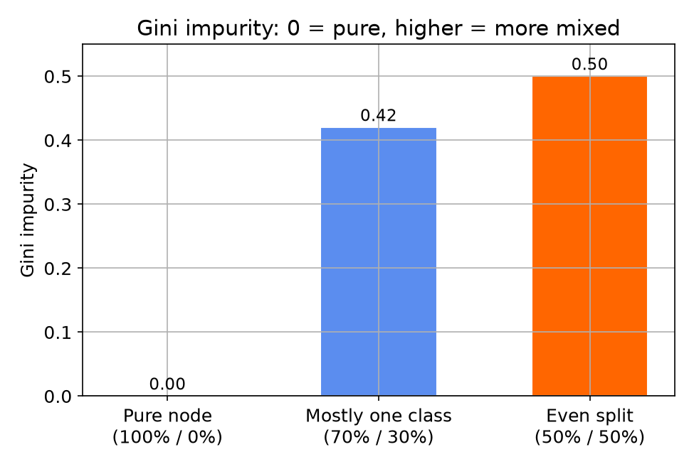
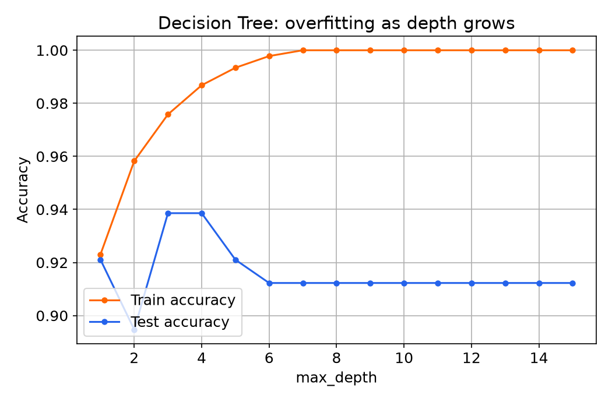
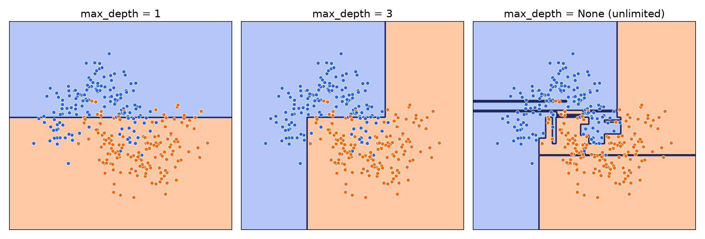
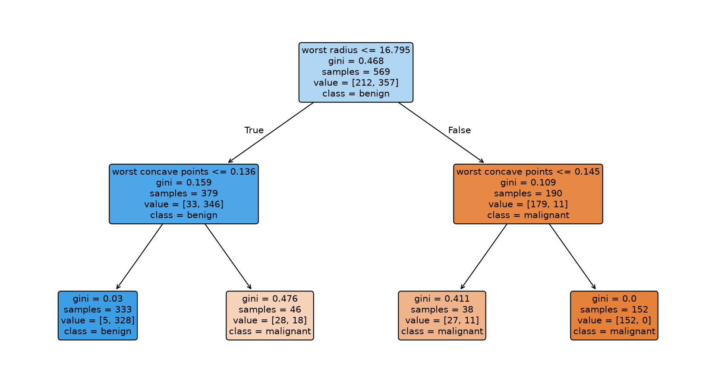

رگرسیون لجستیک یک معادله یاد میگیرد، KNN بر اساس شباهت رأی میگیرد. درخت تصمیم، رویکرد سومی دارد: دقیقاً همانطور تصمیم میگیرد که یک انسان با چند پرسش بله/خیر تصمیم میگیرد. یکی از معروفترین مثالهای کتابهای درسی هوش مصنوعی همین سؤال سادهی روزمره است:
«با توجه به وضعیت هوای امروز، بازی تنیس بکنیم یا نه؟»
Outlook?
Sunny
Humidity?
High
No
Normal
Yes
Overcast
Yes
Rain
Wind?
Strong
No
Weak
Yes
اگر «ابری» باشد همیشه بازی میکنیم؛ در «آفتابی» رطوبت تصمیم میگیرد، در «بارانی» شدت باد. هر مسیر از ریشه تا برگ، دقیقاً یک زنجیره از پرسشهاست - بدون هیچ معادلهای.
اصطلاحشناسی
گره، شاخه، برگ
هر گره (node) یک سوال دربارهی یک ویژگی است.
هر شاخه یک جواب ممکن به آن سوال است.
هر برگ (leaf) یک تصمیم نهایی است (برچسب کلاس).
Humidity?
High
No
Normal
Yes
گرهشاخهبرگ
شکافتن داده
مدل به دنبال «بهترین سوال» در هر گره است
در هر گره، مدل به دنبال سوالی میگردد که داده را به دو گروه تا حد ممکن خالص تقسیم کند.
«خالص» یعنی هر گروه تا حد ممکن فقط از یک کلاس تشکیل شده باشد.
معیار خالصبودن
Gini impurity: خالصبودن هر گروه

Gini = 0: کاملاً خالص
Gini نزدیک ۰.۵: کاملاً مخلوط
مدل، سوالی را انتخاب میکند که مجموع Gini دو گروه فرزند را کمینه کند.
Entropy معیار مشابه دیگری با همین هدف است؛ جزئیات فرمول لازم نیست، فقط اینکه این عدد «خالصبودن» را میسنجد.
هشدار
درخت بدون محدودیت، داده را «حفظ» میکند

اگر هر برگ اجازه داشته باشد فقط یک نمونه داشته باشد، درخت دادهی آموزشی را کامل حفظ میکند - دقیقاً مثل چندجملهای درجهبالا در هفتهی سوم یا k=1 در KNN.
راه مقابله: محدودکردن رشد درخت
دو هایپرپارامتر کلیدی
max_depth
حداکثر عمق درخت؛ کوچکتر = سادهتر و کمبرازشتر، بزرگتر = پیچیدهتر و در معرض بیشبرازش.
min_samples_split
حداقل تعداد نمونه لازم برای اینکه یک گره اصلاً اجازهی شکافتن داشته باشد؛ بزرگتر یعنی محدودیت بیشتر روی رشد درخت.
دیدن اثر عمق
همان طیف کمبرازش / بیشبرازش، اینبار با max_depth

مزیت بزرگ
میتوانیم مستقیم خود درخت را ببینیم

هر جعبه یک گره است: سؤالی که پرسیده، میزان Gini، تعداد نمونهها، و کلاس غالب در آن گره؛ رنگ جعبه هم همان کلاس غالب را نشان میدهد. برخلاف رگرسیون لجستیک یا KNN که تصمیمشان در یک معادله یا مجموعهی همسایهها پنهان است، اینجا کل منطق تصمیمگیری مدل، مستقیم روی صفحه قابل دیدن است.
جمعبندی این بخش
قابلفهمترین مدل تا اینجای دوره
با چند پرسش پیدرپی تصمیم میگیرد - دقیقاً مثل مثال تنیس - و برخلاف KNN نیازی به مقیاسبندی ویژگیها ندارد.
برخلاف رگرسیون لجستیک، میتواند مرزهای کاملاً غیرخطی بسازد.
اما بدون محدودیت عمق، دادهی آموزشی را «حفظ» میکند: به تغییرات کوچک در داده حساس و بیثبات است.
اگر بهجای اعتماد به یک درخت، صدها درخت کمی متفاوت بسازیم و بینشان رأیگیری کنیم چه؟ همین ایده، هفتهی بعد به «جنگل تصادفی» (Random Forest) میرسد.